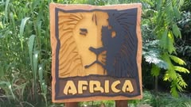

Africa
Cincinnati Zoo & Botanical Garden · Photo Tour #17

It all started as a simple parking lot at a former entrance. The first phase was completed in 2008 for Giraffe Ridge, and Africa was fully completed in 2016, covering about eight acres.
The tour takes in Giraffe Ridge and its Masai giraffes, the flamingo oasis of greater and lesser flamingos, the cheetah run experience, and African lions John & Imani. Then the birds — pink-backed pelicans, saddle-billed storks, guineafowl, vultures and ostriches — the lesser kudu breeding program, Painted Dog Valley with its 32 dogs, and the meerkat scrubland.
It ends at Hippo Cove, home to the common hippos Bibi, Tucker, Fritz and Fiona.
Louie posted this on Facebook — open the original post → · same tour on Instagram